![]()
# R is even better than AI and will consistently get this right! Impressive stuff.
1 + 1[1] 2A guided tour of Posit’s new data science IDE
Every Code Club session so far has used RStudio. Today we’ll spend the session in a different program: Positron, a newer data science IDE from Posit, the same company that makes RStudio.
By the end of the session, you should be able to open your own work in Positron, find your way around, and decide for yourself whether you want to keep using it. Specifically, we’ll cover:
Basically, Posit wanted better support for other programming languages, particularly Python, alongside R. This turned out to be harder to retrofit into RStudio than to start fresh, so they created a new IDE: Positron.
Positron is built on Code OSS, the open-source base of Microsoft’s popular general-purpose code editor, Visual Studio Code (VS Code). It adds data science features that RStudio has but VS Code does not, such as a Variables pane, a Plots pane, and a Data Explorer.
If you use Python alongside R, or are already familiar with VS Code, Positron is a natural choice and I’d strongly recommend switching.
If you use R only, you may not need to switch, but should still consider it, because:
Future new features: While Posit has committed to maintaining and updating RStudio, major new features are now going to Positron first. And some features may never make it to RStudio, because Positron is more adaptable.
AI support: This is much more flexible in Positron, where you can connect to different model providers and subscriptions, and even use Claude Code. In RStudio, you can only use AI via a Posit AI subscription. We’ll demonstrate using AI assistance in Positron in the next session!
Customization: Positron is more customizable than RStudio.
And two more minor points:
Data Explorer: Positron’s Data Explorer can open data files (CSV, Excel, etc.) directly, without having to load them in R at all.
Remote connections: a niche feature, but one that was important to me. Positron can connect to the Ohio Supercomputer Center, or any other remote server. That isn’t possible with RStudio — and while you can run RStudio directly at OSC through OSC OnDemand, that has its downsides. (Happy to expand on this for any OSC users!)
If you haven’t done so already, please:
Install Positron: download the appropriate installer from the download page, and run it. There are installers for Windows, macOS, and Linux.
Make sure you have a recent R (4.4.0 or higher) installed; Positron does not come with its own copy of R.
You should still be able to install Positron, just do so at the user level rather than system-wide.
On a Mac, this involves dragging the Positron app into your User Applications folder, /Users/<username>/Applications (i.e. this Applications folder is in the same parent folder as your Documents, Downloads, and Desktop folders).
On Windows, the Positron installer has a “User install” option. Look for a checkbox or dropdown labeled “Install for me only” (vs. “for all users”) during setup — that keeps the install in your user profile without needing admin rights.
Go ahead and start Positron! It should look something like this:

On the left side of the Positron window, you should see something similar to what’s shown in the screenshot on the right, prompting you to open a folder.
“Opening a folder” is Positron’s equivalent of opening an RStudio Project. The idea is the same: a folder is a self-contained workspace, and opening it sets your working directory and gives you a fresh R session.
But instead of requiring the special .Rproj file that is created when you make an RStudio Project, Positron simply treats any folder you open as a project.
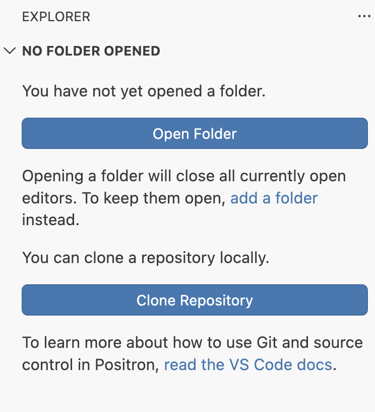
Let’s create and open a new folder for today’s session:
Create a new folder on your computer. You can create it in any way, such as with your computer’s File Explorer / Finder. I would suggest putting this folder within a folder for Code Club, for example: Documents > codeclub > positron (or put another way: ~/Documents/codeclub/positron).
Open your new folder in Positron by clicking the Open Folder button shown above1.
Positron will reload and ask whether you want to trust the folder. Click Yes, I trust the authors and optionally check the box above it.

Why are Projects or open folders needed? These encourage good practices:
setwd()They also make a lot of Positron’s features work better, such as the Explorer, Search, and version control support.
If you open a folder that already contains an .Rproj file, Positron simply ignores the file. So a folder can work as both an RStudio Project and a Positron workspace, which is perhaps handy while you’re trying Positron out.
The good thing about Positron’s mechanism is that you’re practically forced to use it, whereas in RStudio using Projects is easy to skip or not even know about.
Near the top-right corner of the Positron window is the so-called interpreter picker, which lets you choose which installation of R (or Python) to use for your session.
If Positron found your R installation, it may have started a session already — in that case, it will look similar to what’s shown in the screenshot on the right (but with the R version number corresponding to what you have installed).
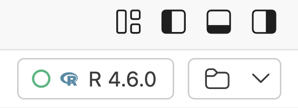
If not, click the picker, and choose your version of R (you may have to click New Console Session before you see the available options):
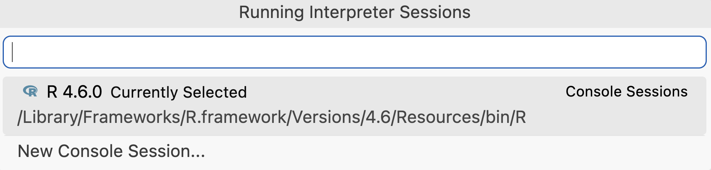
The picker lists every interpreter Positron can find, which could include several versions of R and especially Python. Two nice features of Positron:
On the other hand, if you’re an R user only and have no need to switch between different R versions, you might prefer the simplicity of RStudio’s approach.
Once a session is running, the R Console works just like in RStudio. Try it:
# R is even better than AI and will consistently get this right! Impressive stuff.
1 + 1[1] 2head(iris) Sepal.Length Sepal.Width Petal.Length Petal.Width Species
1 5.1 3.5 1.4 0.2 setosa
2 4.9 3.0 1.4 0.2 setosa
3 4.7 3.2 1.3 0.2 setosa
4 4.6 3.1 1.5 0.2 setosa
5 5.0 3.6 1.4 0.2 setosa
6 5.4 3.9 1.7 0.4 setosaHere’s what that will look like in Positron:
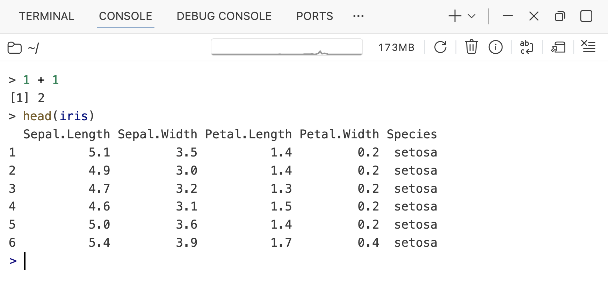
A) Confirm your working directory
Confirm that opening a folder really did set your working directory: run getwd() and check that the path matches the folder you opened.
B) Try running two sessions
Start a second R session from the interpreter picker: click the picker, then New Console Session. (Most likely, you only have a single R version installed, and can pick the same version for the second session. If you have multiple, you can choose to use a different version for the second session.)
You should now have two Console sessions, which should look something like this — pay attention to the right-hand side:
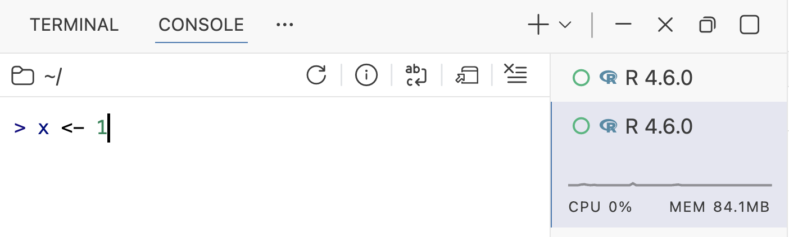
Click on the second (bottom) session, and run:
x <- 1Then switch back to the first session, and run:
xError:
! object 'x' not foundIf you get the above error, that means the two sessions are independent: objects created in one session do not exist in the other.
In the Exploring data section below, we’ll use the flights dataset from the nycflights13 package. This data frame has every flight that departed New York City in 2013. For now, we’ll get it installed and loaded, and will create a script to hold our code.
First, let’s install the two packages we’ll need, tidyverse and nycflights13:
install.packages("tidyverse")
install.packages("nycflights13")If you already have them or think you do, you can skip the installation step and try running the library() calls below directly. Alternatively, it won’t hurt to run the install.packages() calls again — R will simply check that you have the latest version and skip the installation if you do.
Now, let’s create a new R script:
Click File (or the “New” button) > New File..., then select “R File” (one of several ways to do this).
Save it right away (File > Save or Save As, or Cmd/Ctrl+S) in your current folder as explore.R.
I recommend that you add all the code below to this script, and run it from the script (instead of typing it into the console).
Load the two packages we’ll use:
library(tidyverse)── Attaching core tidyverse packages ──────────────────────── tidyverse 2.0.0 ──
✔ dplyr 1.2.1 ✔ readr 2.2.0
✔ forcats 1.0.1 ✔ stringr 1.6.0
✔ ggplot2 4.0.3 ✔ tibble 3.3.1
✔ lubridate 1.9.5 ✔ tidyr 1.3.2
✔ purrr 1.2.2
── Conflicts ────────────────────────────────────────── tidyverse_conflicts() ──
✖ dplyr::filter() masks stats::filter()
✖ dplyr::lag() masks stats::lag()
ℹ Use the conflicted package (<http://conflicted.r-lib.org/>) to force all conflicts to become errorslibrary(nycflights13)Run the code with Cmd+Enter (Mac) or Ctrl+Enter (Windows) — the same shortcut as in RStudio.
The Command Palette is Positron’s main way to access the program’s functionality. It may take some getting used to, but is very handy and powerful.
To open the Command Palette, press Cmd+Shift+P (Mac) or Ctrl+Shift+P (Windows).
A search box will appear at the top of the window: start typing what you want to do, and Positron will fuzzy-match it against every piece of its functionality (actions/commands). Here are some things you might think of looking for in the Command Palette:
theme → Preferences: Color Themerestart → Interpreter: Restart Active Interpreter Sessionsettings → Preferences: Open Settings (UI)Pay attention to the keyboard shortcuts it shows next to each command that has one. For commonly used commands, it’s worth learning the shortcut so you can skip the palette next time.
Side note: RStudio has a Command Palette as well, but it’s more essential in Positron. That’s because Positron has fewer menus and buttons, but more options.
Use the Command Palette to do the following:
Change the color theme to something you like better than the default.
Restart your R session.
Run your whole script (there’s a command for this — find it!).
For each of these, open the palette with Cmd/Ctrl+Shift+P and type:
theme — look for Preferences: Color Theme, then use the arrow keys to preview themes live before hitting Enterrestart — look for Interpreter: Restart Active Interpreter Sessionrun — look for R: Run R File in Console or similarNotice how each of these showed you a keyboard shortcut on the right-hand side.
If you’ve used RStudio before, Positron’s layout should feel broadly familiar. There’s an editor to write code, a console to run it, and various panes to display results. But several things have moved, and there are some aspects without an RStudio equivalent.
Your interface should currently look something like this:
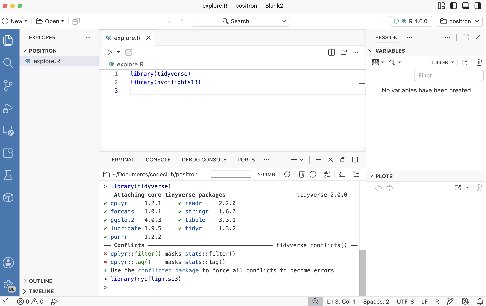

| Region | Where | What’s in it |
|---|---|---|
| Editor | Center (top) | Open scripts and other documents, in tabs |
| Panel | Center (bottom) | R console and Terminal |
| Activity Bar | Far left | Icons that switch what the Primary Side Bar shows |
| Primary Side Bar | Left | Explorer (files), Search, Source Control, Extensions, Packages |
| Secondary Side Bar | Right | Variables, Plots, Help, Viewer, History, Connections |
Almost every pane in Positron can be resized (like in RStudio) and dragged somewhere else (much more flexible than in RStudio). There are also layout presets.
I’ll demonstrate:
Resizing panes such as the Primary Side Bar and the Editor.
Dragging the Help tab down to the bottom, next to the Console, and dragging it back.
Try moving something else. If you make a mess of things, you can always get back to the default layout with the View: Reset View Locations command.
Explore the presets: Open the Command Palette (Cmd/Ctrl+Shift+P) and type layout. Select “Customize Layout…” and you should see several options for layout presets. Try them.
The Customize Layout dialog also lets you hide or move regions — these options are below the presets. For example, try clicking on Activity Bar to hide it.
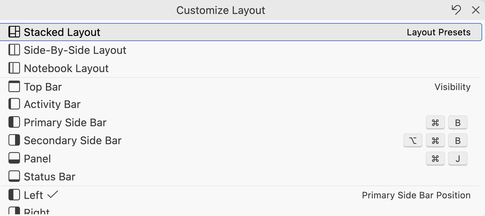
| In RStudio | In Positron |
|---|---|
| Source pane | Editor (center) |
| Console | Console (bottom) |
| Environment | Variables pane (right) |
| Plots | Plots pane (right) |
| Help | Help pane (right), or press F1 on a function |
| Files | Explorer (Activity Bar, far left) |
| Packages | Packages pane (Activity Bar) |
| Git | Source Control (Activity Bar) |
| Viewer | Viewer pane (right) |
| Terminal | A tab next to the Console |
| History | History pane (right) |
| Build | No pane — use the Command Palette |
View(df) data viewer |
Data Explorer (opens as an editor tab) |
The Activity Bar is the strip of icons on the far left. Clicking an icon swaps out what’s shown in the Primary Side Bar right next to it. Among the options are:
The Explorer (the top icon, looks like stacked documents) shows the folders and files in your currently open folder. Clicking a file will open it in the Editor. This is Positron’s equivalent of RStudio’s Files pane, but a bit nicer as you can see the whole project’s structure at once and expand/collapse subfolders.
Especially when your project has many subfolders and files, it can be tedious to click through the Explorer tree to find a file. The Go to File feature is a faster way to jump to a file in your project, as long as you know part of its name (this is similar to RStudio’s Go to File/Function).
Try it: press Cmd/Ctrl+P and type expl — your explore.R script should be the top hit. Press Enter to jump to it.
The Search pane lets you search, and optionally replace, text across every file in your open folder.
Try it: open Search by clicking the Search icon (magnifying glass) in the Activity Bar, then type tidyverse in the search box. Currently, there’s only one match, but we’ll see more later. Note that you can click on a result to jump straight to that line.
This is especially useful once your project grows to span multiple scripts. For example, finding every place you reference a column name before renaming it, or every script that loads a particular package.
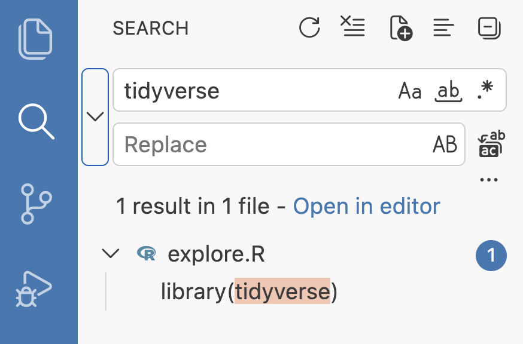
Create a second script in your folder, plots.R with these two lines in it:
library(tidyverse)
# TODO: plot the distribution of arr_delay for the flights dataNow that your project has two files, use Search to look for tidyverse again, paying attention to how the results are reported and organized.
Type tidymodels in the replace field below the search box: Positron previews every change it would make, right in the results list. Have a look, and then clear the replace field, since we don’t actually want to rename anything.
Click on the Packages icon (cube shape) in the Activity Bar, and you’ll see every package installed in your library, with:
library() on it)Explore this and try, for example, to filter to outdated packages (if any), and optionally update one or two of them.
Now, we’ll use the flights data to try out some of Positron’s data exploration features.
To start, nycflights13 provides the flights data frame, but it won’t show up as an object in your environment yet. Add the following line to explore.R and run it:
flights <- flightsLook at the Variables pane on the right: flights should now be listed there. It’s the equivalent of RStudio’s Environment pane, and as in RStudio, you can expand objects to look inside them by clicking the arrow next to an object’s name.
Try expanding flights. You should see each column, its type, and a preview of its contents.
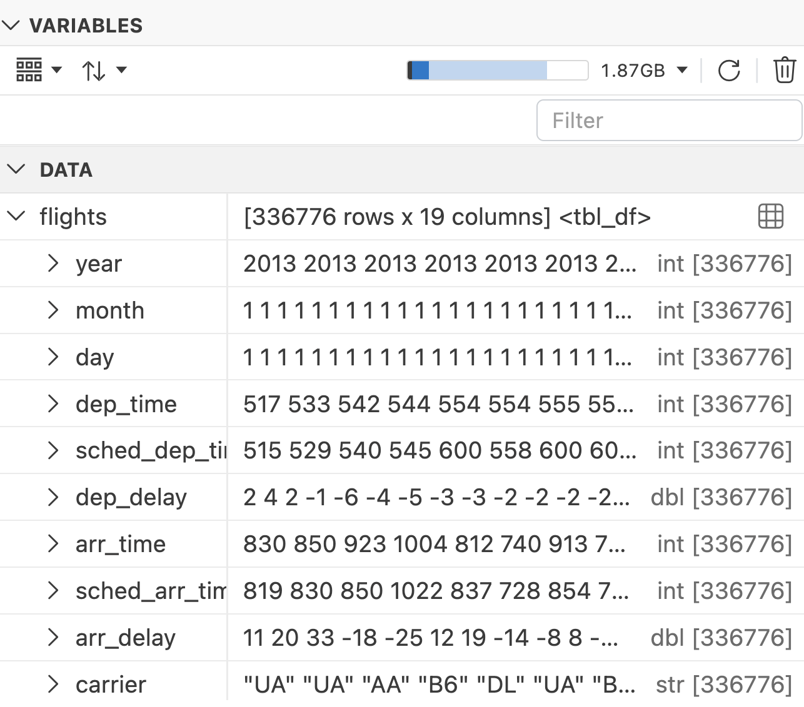
flights object expanded.The Data Explorer is Positron’s equivalent of RStudio’s View() function, but with a lot more functionality. Click the small table icon next to flights in the Variables pane, and it should open as an editor tab and look something like this:
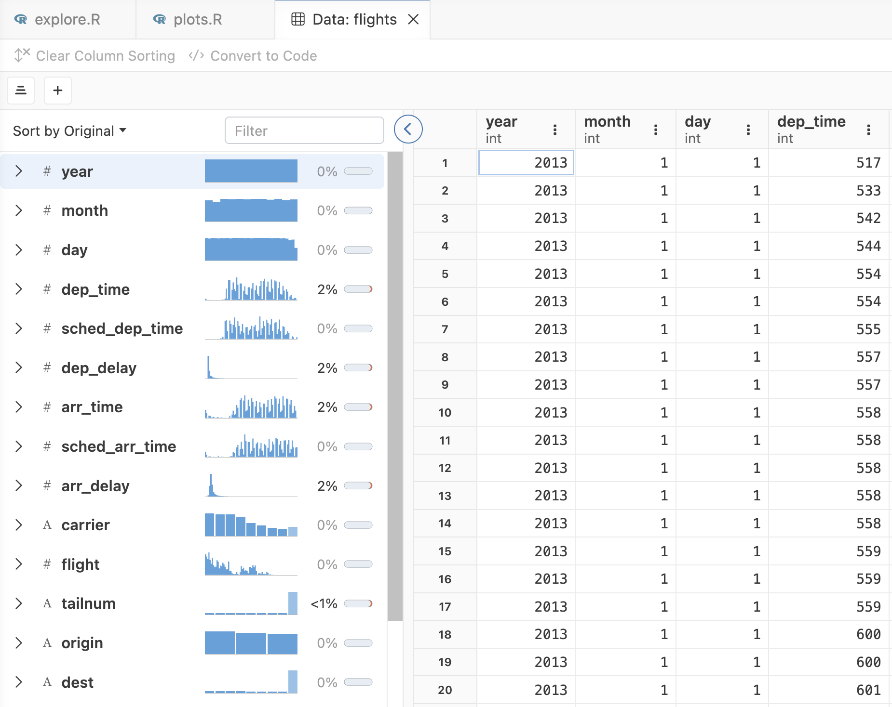
flights data frame.The Data Explorer has three parts:
The summary panel may be hidden by default: if you don’t see it (look at the screenshot above for reference), then look for an arrow on the left-hand side of the spreadsheet view, and click it to expand the summary panel.
I’ll demonstrate the summary panel, including:
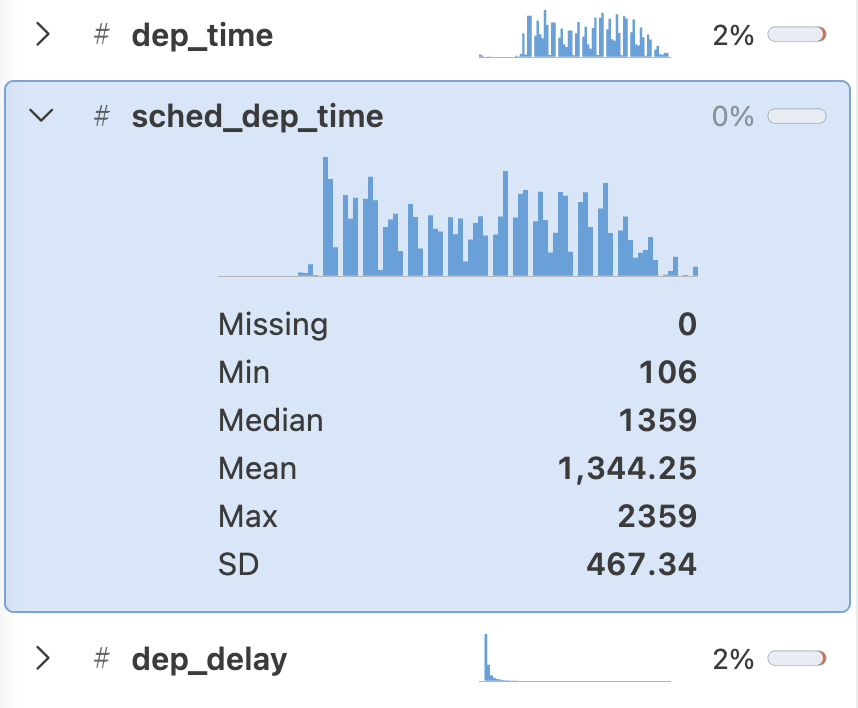
sched_dep_time (scheduled departure time) expanded.Sort by clicking the three dots in the column header and picking Sort Ascending or Sort Descending.
Filter by clicking + Add Filter in the filter bar, picking a column, and choosing a condition. You can add several filters, and they will combine.
Sorting and filtering in the Data Explorer does not change the data frame in your R session, but there is a “Convert to Code” button (!) that generates the R code to reproduce your filter and sort.
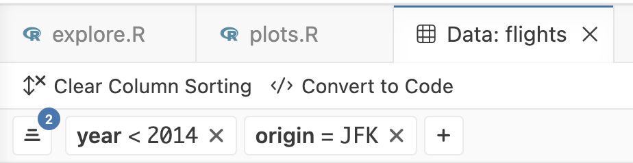
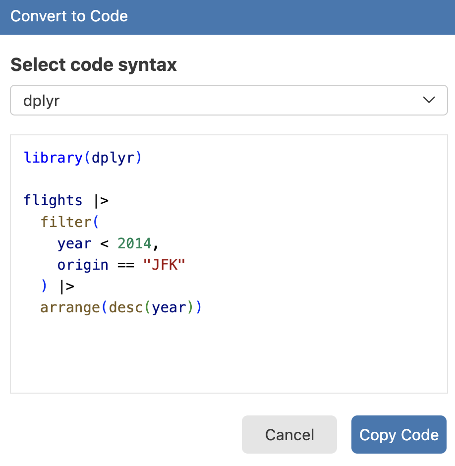
Use the Data Explorer to answer these:
Which column has the most missing values? (Hint: the summary panel shows a missing-value percentage per column.)
How many distinct airline carriers (carrier) are in the data?
Filter to flights that departed from JFK and had a departure delay (dep_delay) of more than 120 minutes. Roughly how many rows are left? (Look for the row count displayed in the Data Explorer — it reflects your active filters.)
Sort those filtered flights by dep_delay, descending. What was the single worst departure delay out of JFK, in hours?
Use the Convert to Code button to get code corresponding to what you did in steps 3 and 4, and copy it into your explore.R script.
You can open a data file directly in the Data Explorer, without any R code (this is a feature RStudio does not have at all). Let’s start by creating a CSV file from the flights dataset, so we have a data file to work with:
# Make a copy of the data as a CSV file, so we have a data file to work with
dir.create("data")
write_csv(flights, "data/flights.csv")Next, open data/flights.csv via the Explorer or with Cmd/Ctrl+P. The file will open directly in the Data Explorer! And this will also work for .tsv and even .xlsx (Excel) files.
For plain-text files, if you want to see the raw text instead of the Data Explorer, click the “Open as Plain Text File” button:
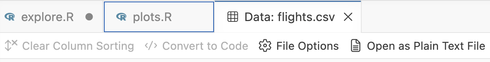
Let’s create a plot, so we can see where it appears. Copy the following code into plots.R and run it:
ggplot(flights, aes(x = arr_delay)) +
geom_histogram(bins = 100, fill = "steelblue", color = "grey20") +
geom_vline(xintercept = 0, color = "tomato1", linetype = "dashed") +
scale_x_continuous(limits = c(-100, 300)) +
scale_y_continuous(
expand = expansion(mult = c(0, 0.05)),
labels = scales::comma_format()
) +
labs(x = "Arrival delay (minutes)", y = "Number of flights") +
theme_bw(base_size = 14) +
theme(panel.grid.minor = element_blank())Warning: Removed 10041 rows containing non-finite outside the scale range
(`stat_bin()`).Warning: Removed 2 rows containing missing values or values outside the scale range
(`geom_bar()`).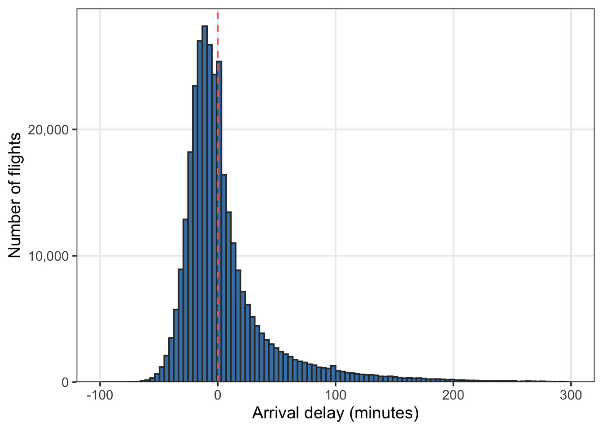
The Plots pane behaves much like RStudio’s, including the back/forward arrows through your plot history. Two things to try:
Drag a tab to the left or right edge of the Editor area (or use View: Split Editor from the Command Palette) to view two files at once, side by side. This is useful for comparing two scripts, or keeping a script and a data file’s Data Explorer view open together.
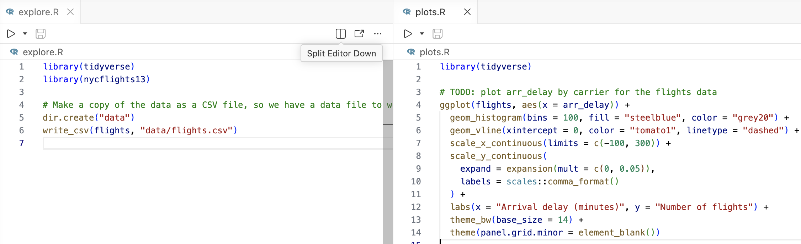
Like in RStudio, you can get help on a function by typing ?function_name in the console, or by putting your cursor inside a function name in your script and pressing F1. Give one or both methods a go with geom_histogram.
Let’s finish by looking at some ways to customize Positron to your liking.
Positron has many extensions (add-ins) that you can install, in large part because most VS Code extensions are compatible with Positron. Some useful ones:
| Extension | What it does |
|---|---|
| Code Spell Checker | Underlines misspelled words in code and prose |
| Better Comments | Color-codes certain comments by type (TODOs, questions, etc.) |
| Pastum | Converts a table on your clipboard into code (!) 2 |
| Indent Rainbow | Colorizes indentation levels in scripts |
| Rainbow CSV | Colorizes CSV columns when viewing as plain text |
| Air | R code formatter |
| Quarto | Quarto support |
| Tomorrow Night Bright (R Classic) | The RStudio color theme |
| SVG Preview | Enables viewing of .svg figures |
First, let’s try the Air extension:
Click the Extensions icon in the Activity Bar (four blocks, with one set apart from the other three).
Type “air” in the search bar, and you should see the Air extension appear.
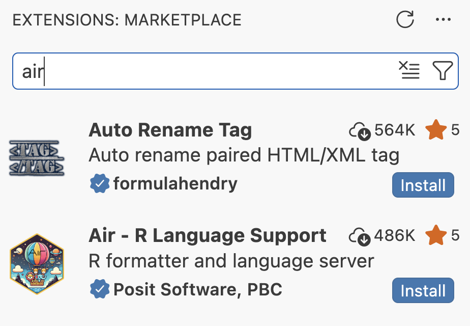
Click the blue “Install” button to install it.
Type some deliberately messy code into explore.R:
x=c(1,2, 3,4)
y <-1:10Open the Command Palette and run Format Document. What changed?
What if you wanted to format your code automatically every time you save a file? This is possible with a Positron setting, which we’ll see in the next section.
Install the Better Comments extension, and add a few comments to your script that start with !, ?, or TODO: to see how they are color-coded.
Install the Code Spell Checker extension, and add a misspelled word or two to a comment in your script to see how they are underlined.
(You should notice that the spell check unfortunately also underlines valid code syntax, but you can add words to the dictionary to avoid that.)
Below:
# TODO and #?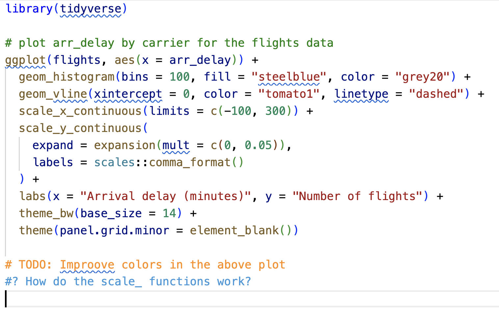
The main way to change Positron’s settings is the Settings UI.
As a first example, let’s find the option to automatically format code on save:
Open the Settings UI by either:
Type “format” in the search bar, and you should see editor.formatOnSave at the top of the list (if not, add “on save” to your search):
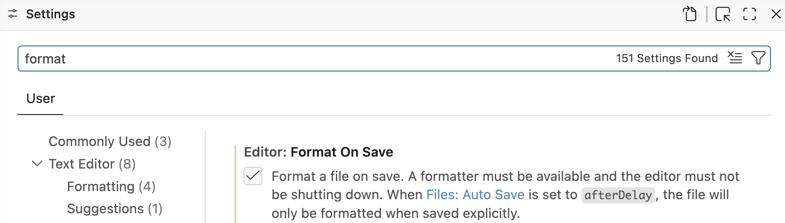
Check the box as shown in the screenshot above to turn on automatic formatting on save.
Test it by adding the following code to plots.R and saving the file:
ggplot(flights, aes(x = arr_delay)) + geom_histogram(bins = 100, fill = "steelblue", color = "grey20") +
scale_y_continuous(expand = expansion(mult = c(0, 0.05)), labels = scales::comma_format())settings.json and user vs. workspace settings (Click to expand)
Under the hood, every setting lives in a settings.json file, which you can edit directly via Preferences: Open User Settings (JSON).
This can be useful because, for example, it lets you paste in a whole block of settings someone shared with you, and makes it easy to copy your entire configuration to a new computer. Occasionally, it’s also the only way to reach a setting that isn’t yet exposed in the UI.
Settings come in two levels:
.vscode/settings.json file inside it.Workspace settings override user settings when the two conflict. Unless you have a specific reason to limit a setting to one project, change user settings by default, so your preferences carry over to every new folder you open.
Next, let’s see a setting that I highly recommend changing: adding a ruler to the editor at 80 characters. Why a ruler? It is good practice to keep lines of code reasonably short, and this visual guide helps you do that: if your code goes past the ruler, consider breaking it into multiple lines.
Open the settings UI as above and search for “ruler”: you should see the option “Editor: Rulers”.
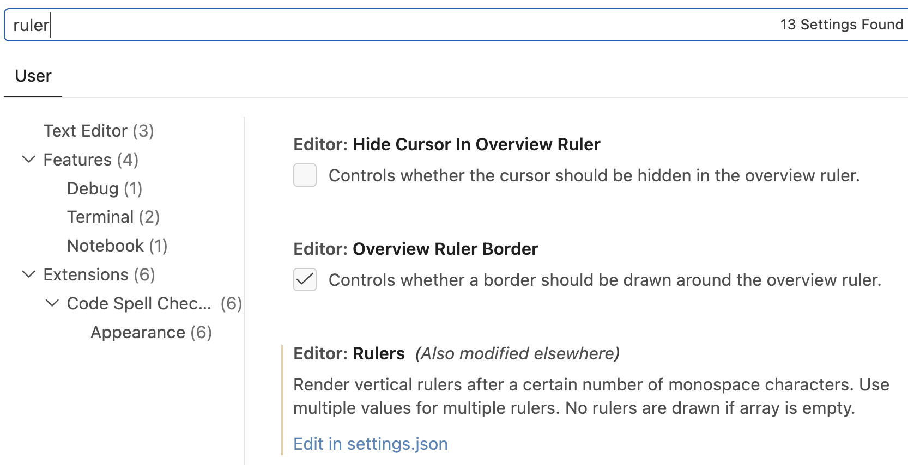
This option can’t be changed in the UI, but you can click the Edit in settings.json link to open the JSON file and add these lines:
"editor.rulers": [
80
](It’s set up this way so you can add multiple rulers if you want.)
In the screenshot below, you can see the vertical ruler — and a line that is too long:
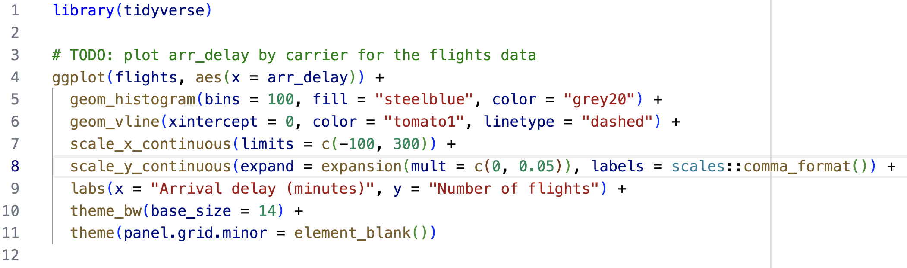
You should reformat that line as follows, which the Air formatter would also do:
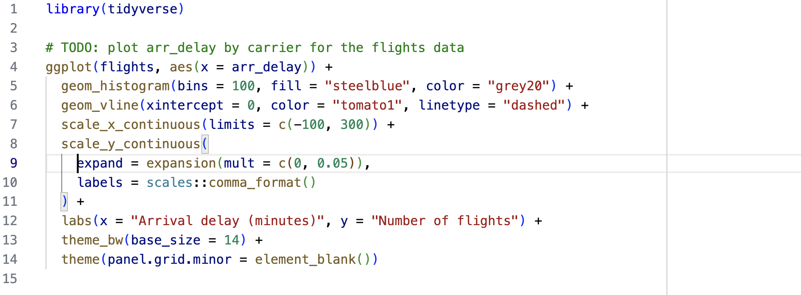
By default, clicking a file opens it in preview mode: the tab title shows in italics, and opening a different file this way reuses that same tab instead of opening a new one. This can be handy to prevent your tab bar from filling up with files you only glance at, but takes some getting used to.
Once you start editing a file, the tab becomes permanent and is no longer in preview mode. But sometimes you want to keep a file open even if you haven’t edited it yet. You can do this in one of two ways:
If you really don’t like preview mode, you can turn it off entirely by setting workbench.editor.enablePreview to false.
files.autoSave
saves files automatically; some people love this, others hate it, try it and see.
workbench.activityBar.location
If you want to maximize the horizontal space for your editor and panes, setting this to "top" moves the Activity Bar from the left side to the top of the window.
editor.emptySelectionClipboard
If you press Cmd/Ctrl+C with no text selected, Positron (like VS Code) copies the entire current line instead of doing nothing. This is quite handy but can also catch you off guard. If you don’t want this behavior, set this option to false.
Empty selection behavior
Click somewhere in a line of your script without selecting anything, press Cmd/Ctrl+C, and then paste on an empty line below.
Preview mode
Close both scripts, then click on explore.R in the Explorer to open it in preview mode. Then click on plots.R in the Explorer. What happens?
Now double-click explore.R in the Explorer to open it in a permanent tab. Then click on plots.R in the Explorer. What happens now?
Feel free to change another setting or try another extension we talked about.
Open the Command Palette and run Preferences: Open Keyboard Shortcuts to see, in a searchable list, every action (command) you can perform in Positron along with its current shortcut (if it has one) — type a command name or describe the action you want (e.g. run line) to find it.
You can click any row to record a new shortcut, and right-click to reset it back to default.
Many RStudio shortcuts already work in Positron, but others don’t, because Positron inherits VS Code’s shortcuts, which sometimes conflict. But if you’re really used to the RStudio keybindings, and want to keep using those, you can essentially restore them.
Open the Command Palette and run Preferences: Open Settings (UI), then search for rstudioKeybindings and check the box:
"workbench.keybindings.rstudioKeybindings": trueRestart Positron for it to take effect. This turns on a large set of RStudio shortcuts, including:
| Shortcut | Action |
|---|---|
| Ctrl+1 | Focus the Source/Editor pane |
| Ctrl+2 | Focus the Console |
| F2 | Go to definition |
Multiple cursors work much as in RStudio (Alt+click, Ctrl+Alt+arrow keys), but Positron adds a handy way to build a multi-cursor selection from matching text:
This is a quick way to rename a variable or column throughout a script, without a find-and-replace.
Use File > Open Folder... to open a folder that corresponds to one of your own projects with R scripts and data files.
Open a script you know well, and run the first few lines of it.
Open one of your own data objects in the Data Explorer.
Does anything stand out?